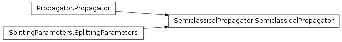
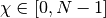
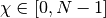
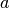
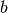
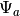
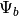
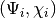
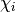

SemiclassicalPropagator¶
About the SemiclassicalPropagator class¶
The WaveBlocks Project
@author: R. Bourquin @copyright: Copyright (C) 2010, 2011, 2012, 2013, 2014 R. Bourquin @license: Modified BSD License
Inheritance diagram¶

Class documentation¶
- class WaveBlocksND.SemiclassicalPropagator(parameters, potential, packets=[])¶
This class can numerically propagate given initial values
 in
a potential
in
a potential  . The propagation is done for a given set of homogeneous
Hagedorn wavepackets neglecting interaction.
. The propagation is done for a given set of homogeneous
Hagedorn wavepackets neglecting interaction.- add_wavepacket(packet)¶
Add a new wavepacket
to the list of propagated wavepackets.Parameters: packet (A tuple  with a HagedornWavepacket
instance and
with a HagedornWavepacket
instance and  an integer.) – The new wavepacket and its leading component .
an integer.) – The new wavepacket and its leading component .
- build(method)¶
Parameters: method – A string specifying the method for time integration. Returns: Two arrays  and . Method Order Authors Reference LT 1 Lie/Trotter [1], [3] page 42, equation 5.2 S2 2 Strang [2], [3] page 42, equation 5.3 SS 2 Strang [2], [3] page 42, equation 5.3 PRKS6 4 Blanes/Moan [4] page 318, table 2, ‘S6’ BM42 4 Blanes/Moan [4] page 318, table 3, ‘SRKNb6’ Y4 4 Yoshida [5], [3] page 40, equation 4.4 Y61 6 Yoshida [5], [3] page 144, equation 3.11 BM63 6 Blanes/Moan [4] page 318, table 3, ‘SRKNa14’ KL6 6 Kahan/Li [6], [3] page 144, equation 3.12 KL8 8 Kahan/Li [6], [3] page 145, equation 3.14 KL10 10 Kahan/Li [6], [3] page 146, equation 3.15 [1] H.F. Trotter, “On the product of semi-groups of operators”, Proc. Am. Math. Soc.1O (1959) 545-551. [2] (1, 2) G. Strang, “On the construction and comparison of difference schemes”, SIAM J. Numer. Anal. 5 (1968) 506-517. [3] (1, 2, 3, 4, 5, 6, 7, 8) E. Hairer, C. Lubich, and G. Wanner, “Geometric Numerical Integration - Structure-Preserving Algorithms for Ordinary Differential Equations”, Springer-Verlag, New York, 2002 (Corrected second printing 2004). [4] (1, 2, 3) S. Blanes and P.C. Moan, “Practical Symplectic Partitioned Runge-Kutta and Runge-Kutta-Nystrom Methods”, J. Computational and Applied Mathematics, Volume 142, Issue 2, (2002) 313-330. [5] (1, 2) H. Yoshida, “Construction of higher order symplectic integrators”, Phys. Lett. A 150 (1990) 262-268. [6] (1, 2, 3) W. Kahan and R.-c. Li, “Composition constants for raising the orders of unconventional schemes for ordinary differential equations”, Math. Comput. 66 (1997) 1089-1099.
- get_number_components()¶
Returns: The number  of components
of components  of .
of .
- get_potential()¶
Returns the potential
used for time propagation.Returns: A MatrixPotential subclass instance.
- get_wavepackets(packet=None)¶
Return the wavepackets
 that take part in the time propagation by the
current SemiclassicalPropagator instance.
that take part in the time propagation by the
current SemiclassicalPropagator instance.Parameters: packet (Integer or None) – The index  (in this list) of a single packet
(in this list) of a single packet  that is
to be returned. If set to None (default) return the full list with all packets.
that is
to be returned. If set to None (default) return the full list with all packets.Returns: A list of HagedornWavepacket instances or a single instance.
- intsplit(psi1, psi2, a, b, tspan, N, args1=[], args2=[])¶
Compute a single, full propagation step by operator splitting.
Parameters: - psi1 – First evolution operator 
- psi2 – Second evolution operator 
- a – Parameters for evolution with
- b – Parameters for evolution with
- tspan – Timespan
 of a single, full splitting step
of a single, full splitting step - N – Number of substeps to perform
- args1 – Additional optional arguments of
- args2 – Additional optional arguments of
Note
The values for args1 and args2 have to be ``list``s even in case of single items.
- post_propagate()¶
Given the wavefunction
 at final time
at final time  ,
perform some computations exactly once after running the ordinary
time propagation and before each time simulation data will be saved.
,
perform some computations exactly once after running the ordinary
time propagation and before each time simulation data will be saved.This method does not raise an exception but instead just does nothing and returns.
- pre_propagate()¶
Given the wavefunction
at initial time  ,
perform some computations exactly once before running the ordinary
time propagation and after each time simulation data was saved.
,
perform some computations exactly once before running the ordinary
time propagation and after each time simulation data was saved.This method does not raise an exception but instead just does nothing and returns.
- propagate()¶
Given a wavepacket
at time compute the propagated
wavepacket at time  . We perform exactly one timestep of size
. We perform exactly one timestep of size
 here. This propagation is done for all packets in the list
and neglects any interaction between two packets.
The semiclassical propagation scheme is used.
here. This propagation is done for all packets in the list
and neglects any interaction between two packets.
The semiclassical propagation scheme is used.
- set_wavepackets(packetlist)¶
Set the list
of wavepackets that the propagator will propagate.Parameters: packetlist (A list of  tuples.) – A list of new wavepackets and their
leading components  to propagate.